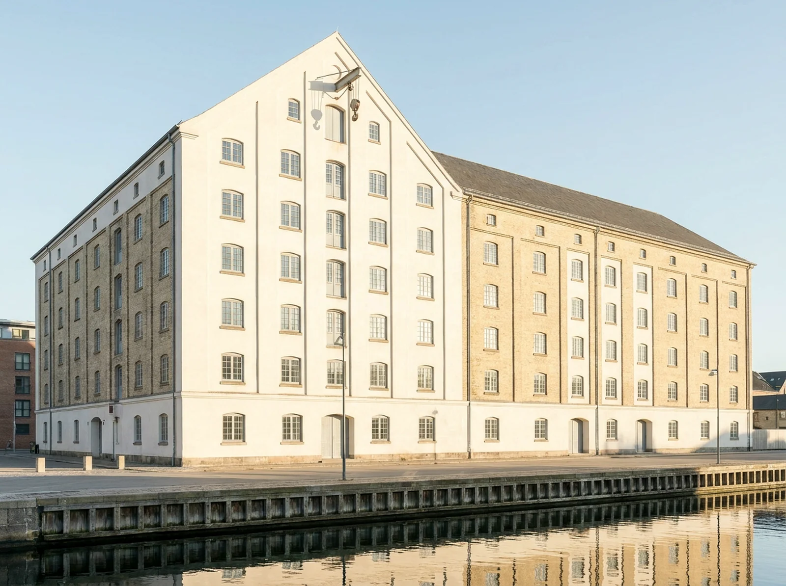
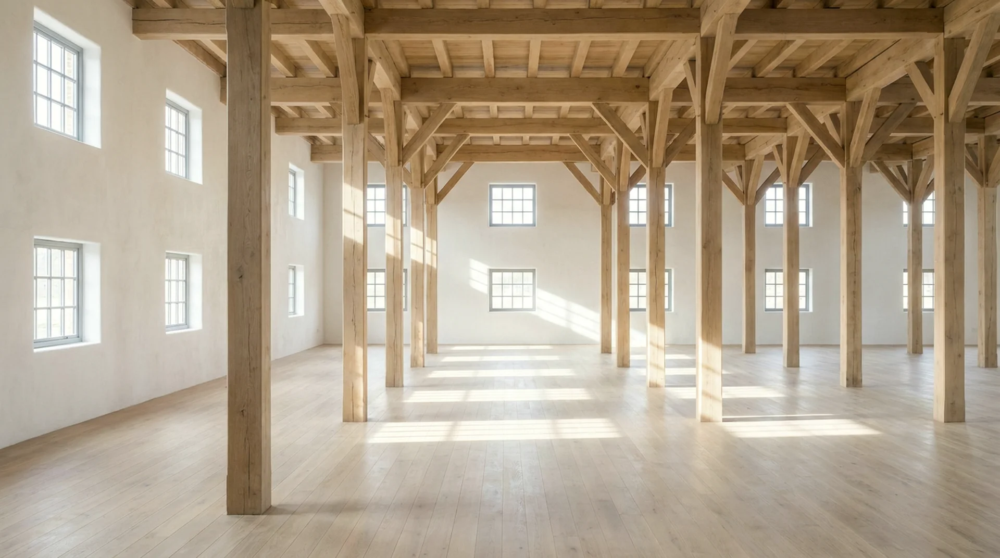
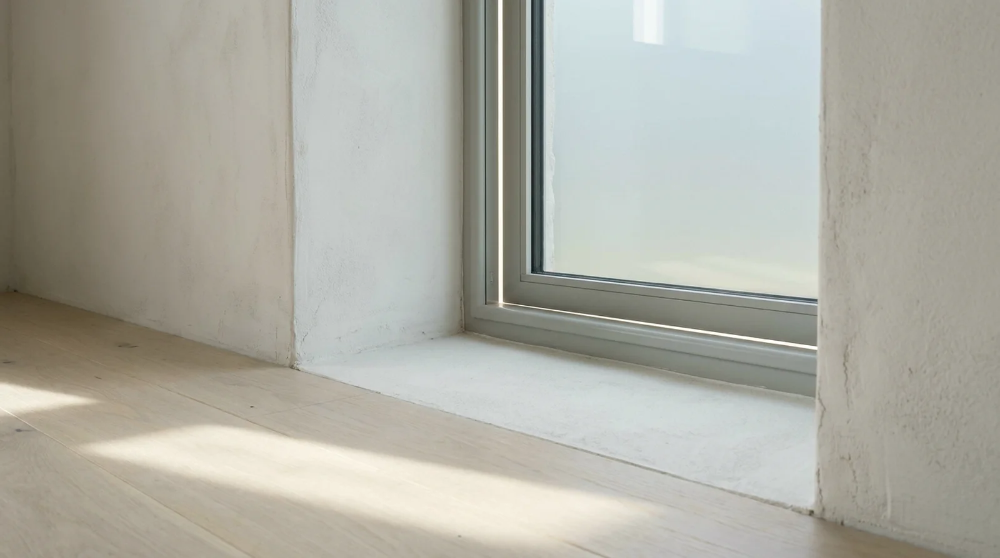

Hour
—
The holdings · Sheet A-03
The Grain Store

01 · The case for this building
Acquired 2014 · our first
Built1887
ConstructionBrick · oak frame
RoofSlate · gable hoist
Window wallsEast 96° · West 276°
Glazing38 – 52%
Ceilings3.1 – 5.8 m
Day—
Morning on the water, evening on the street.
Grain wanted through-draught, so the store got windows on both long walls — east over the basin, west to the lane — and by accident of ventilation it became the best-lit deep floor in the harbour. The sun arrives across the water at breakfast, hands the room to the sky at midday, and returns down the lane before closing.
The floors are deep and the oak columns are non-negotiable: they hold the building up and always will. Workshops, printers, studios that need benches by a window and storage in the dark middle — this is their building. The gable loft, up in the roof, takes light from both sides at once.
02 · The light, surveyed
Computed live · solar time · 55.7° N
Sun path · today—
05:00Solar noon21:00
Sun height
—
—
Bearing
—
—
Direct on glass
—
—
Plan · Second floorColumns drawn as dots
—
03 · The floors
Rents computed: area × building rate × light factor
Lettable floors · diagrammaticHover a row
Open floors link to the enquiry sheet. Every rent above is arithmetic, not aspiration.
04 · In the rooms
Photographed at working hours, unstyled

